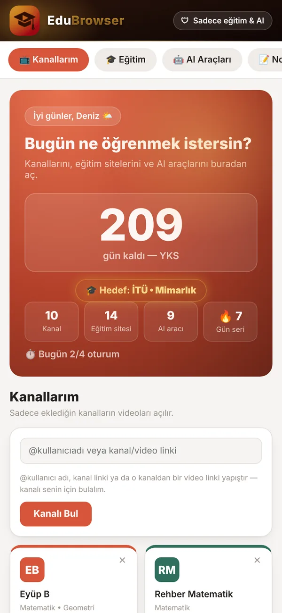
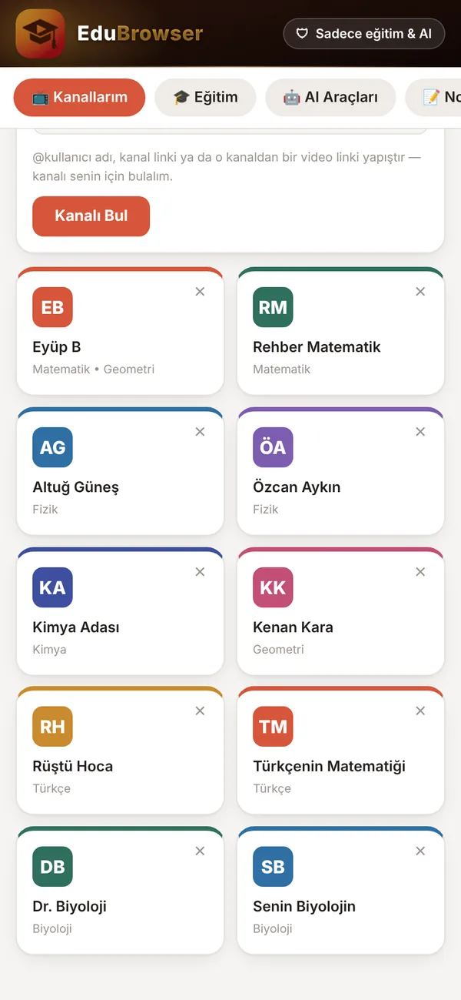
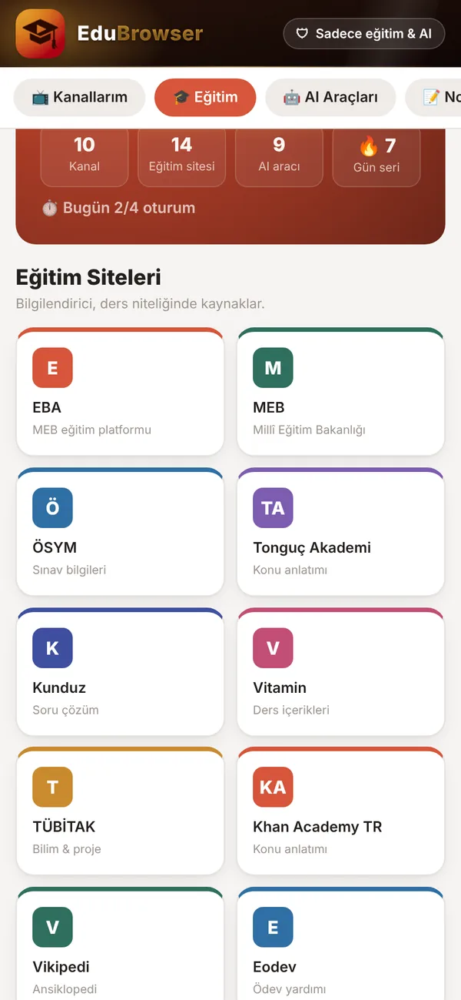
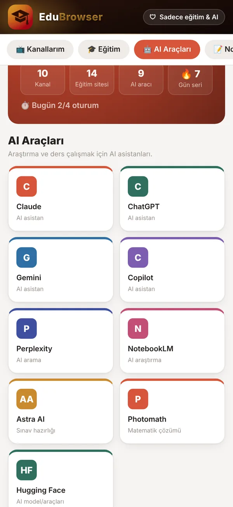
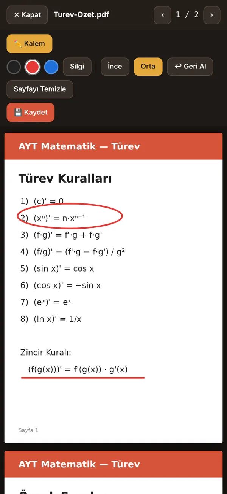
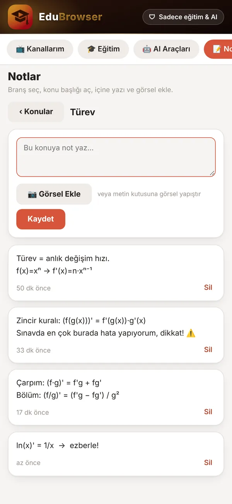
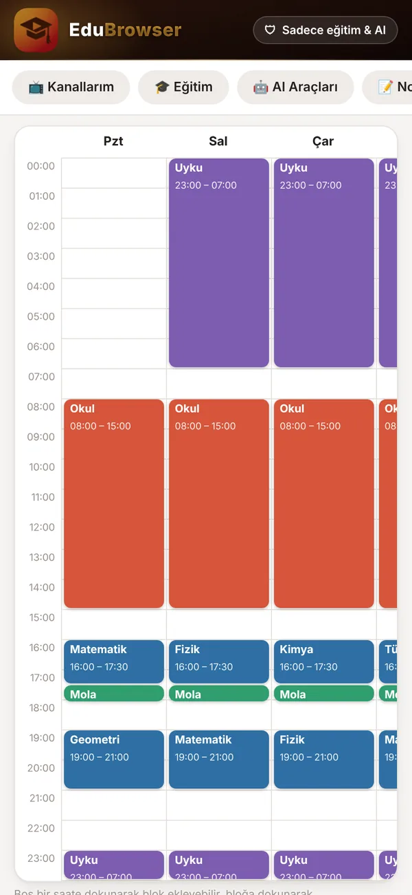
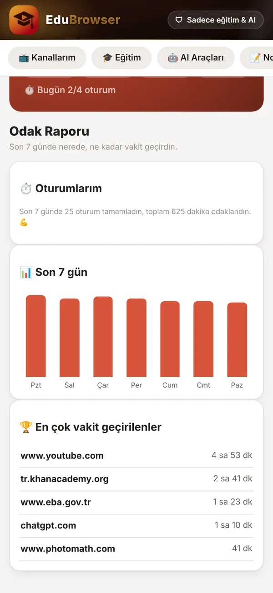
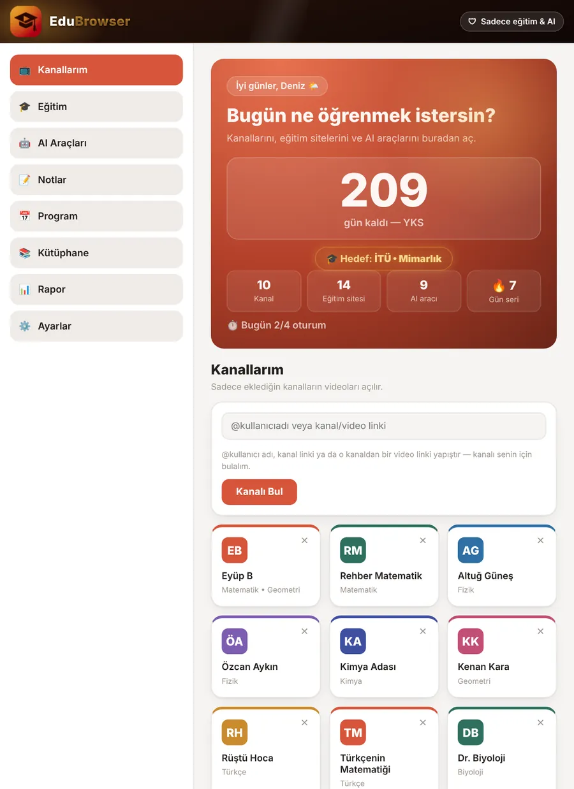
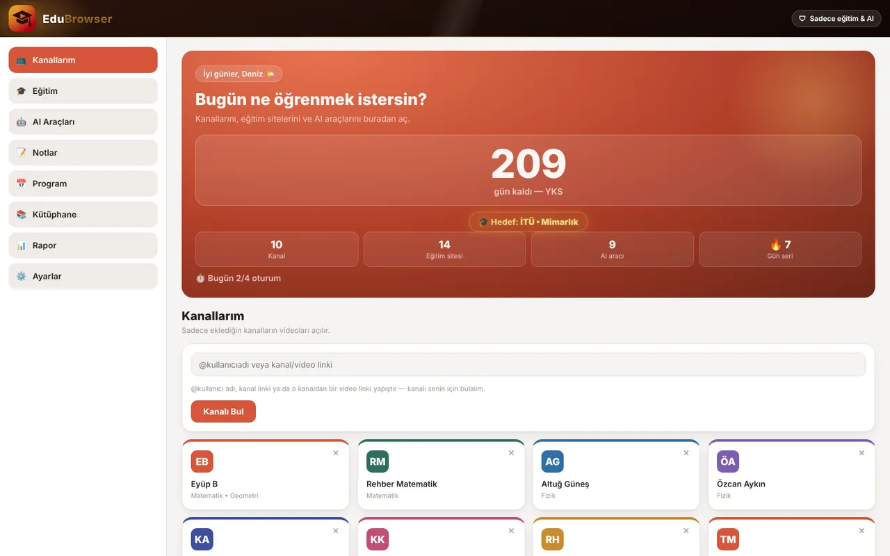

YouTube var, kısa video yok.
Kanallarım sekmesinde sadece eklediğin eğitim kanalları duruyor. Ana sayfa önerileri ve kısa videolar karşına çıkmıyor. Yeni bir kanalı @kullanıcı adıyla ya da linkiyle eklemen yeterli.
shorts'a kaymak yok!EduBrowser bir tarayıcı. İçinde eğitim siteleri, seçtiğin YouTube kanalları ve yapay zekâ araçları açılıyor. Kısa videolar, sosyal medya ve oyun siteleri EduBrowser'da açılmıyor.
Ücretsiz. Android sürümü 0,7 MB, Windows sürümü 82 MB.

Alanını, sınavını, hedef üniversiteni ve zorlandığın dersleri seç.
Derslerine göre önerilen kanalları tek dokunuşla ekle. İstediğin başka bir kanalı da linkiyle eklersin.
Kanalların, eğitim siteleri, AI araçları, notların ve PDF'lerin aynı yerde seni bekliyor.
Kanallarım sekmesinde sadece eklediğin eğitim kanalları duruyor. Ana sayfa önerileri ve kısa videolar karşına çıkmıyor. Yeni bir kanalı @kullanıcı adıyla ya da linkiyle eklemen yeterli.
shorts'a kaymak yok!
Ders için lazım olan siteler tek dokunuşta. Takıldığın soruyu bir yapay zekâya sorar, konuyu anlattırırsın.


Her dersin ayrı bir defteri var: konu aç, yaz, fotoğrafını ekle. Kitaplarını ve ders notlarını PDF olarak yükle, kalemle altını çiz, kaydet.
kitapların hep cebinde

Haftalık programını saat saat gir. Pomodoro zamanlayıcıyla çalış, mola vakti gelince EduBrowser hatırlatsın. Rapor sekmesinde son 7 günde kaç oturum yaptığını görürsün.


YKS'yi ve okul yazılılarını ekle. Kaç gün kaldığı ana ekranda yazar.
Gece çalışırken gözünü yormaz. 8 ana renkten birini de seçebilirsin.
Yazı boyutunu büyüt ya da küçült, sağ üstte saati göster, tam ekrana geç.
Android telefon ve tabletlerde APK ile, Windows bilgisayarlarda kurulum dosyasıyla çalışır. Ekran büyüdükçe menü yana geçer.


Hayır. EduBrowser telefonundaki diğer uygulamalara karışmaz. Bu siteler sadece EduBrowser'ın içinde açılmaz. Ders çalışacağın zaman EduBrowser'ı açıp onunla çalışırsın.
Hayır, EduBrowser ücretsiz.
Evet. Kanallarım sekmesine kanalın @kullanıcı adını ya da linkini yapıştırıp Kanalı Bul'a basman yeterli.
Şu an Android ve Windows sürümleri var.
APK dosyasını indirip aç. Telefonun bilinmeyen uygulamaları yükleme izni isterse, izni indirdiğin uygulama için ver ve kurulumu tamamla.
Yeni ve az indirilmiş programlarda bu uyarı çıkabilir. Uyarıda Ek bilgi'ye, sonra Yine de çalıştır'a bas.
Kendi cihazında. Notların, programın ve yüklediğin PDF'ler EduBrowser'ın içinde, cihazında saklanır.